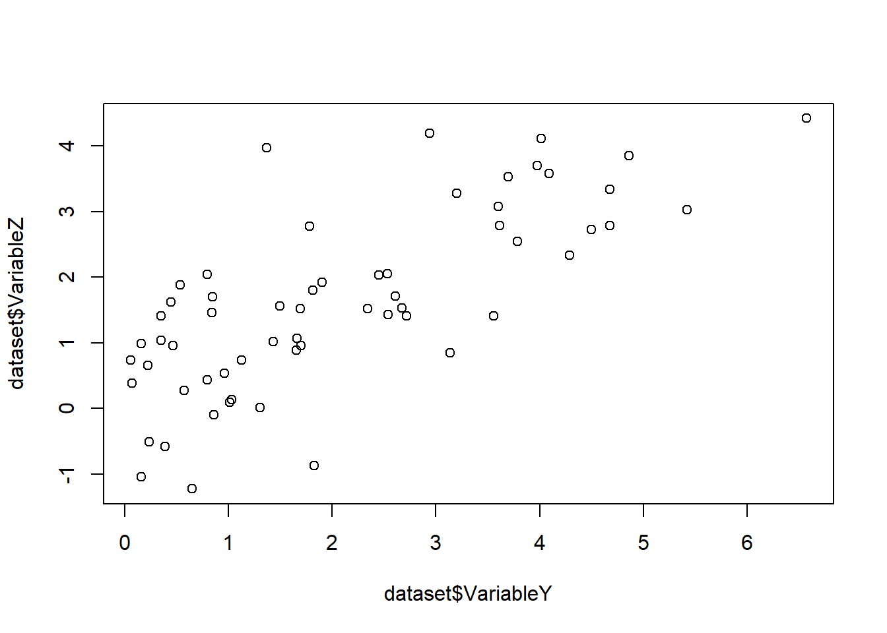
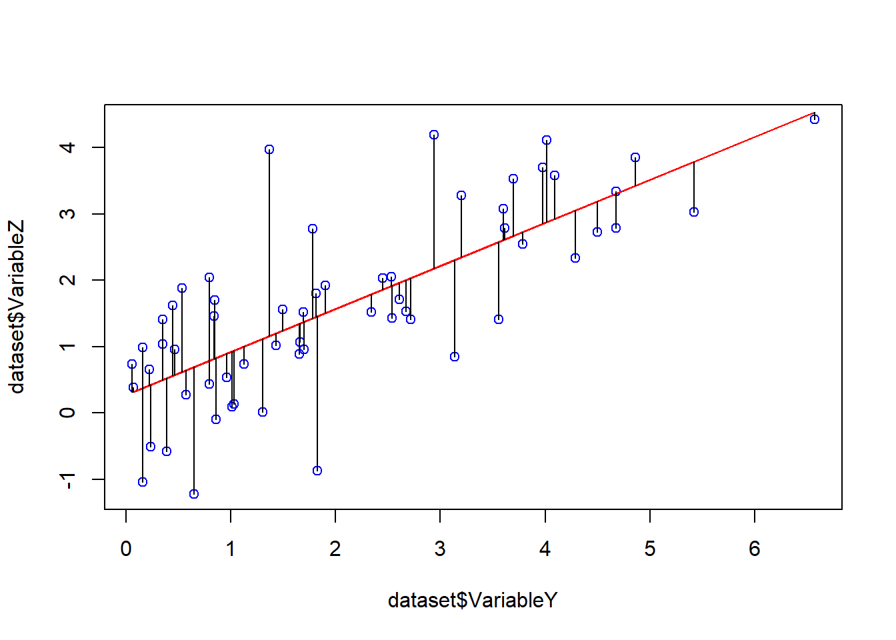
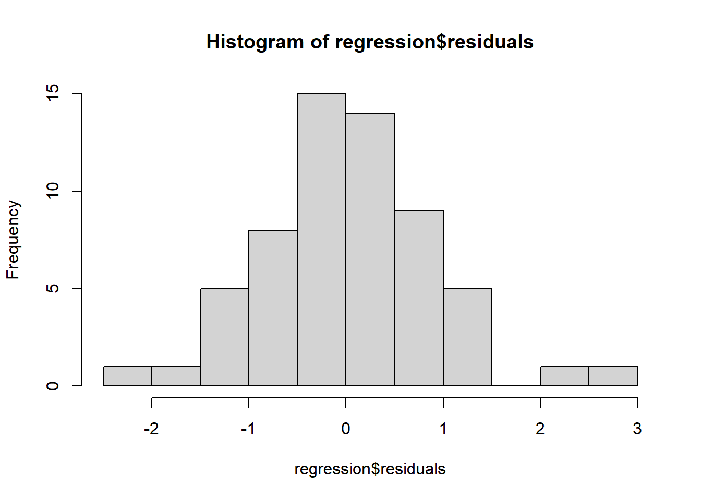
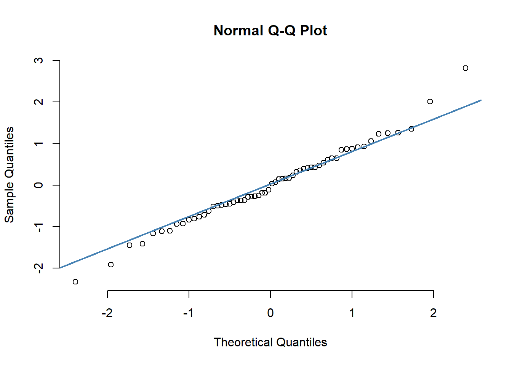
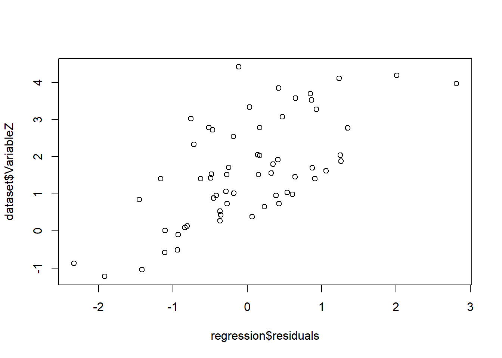
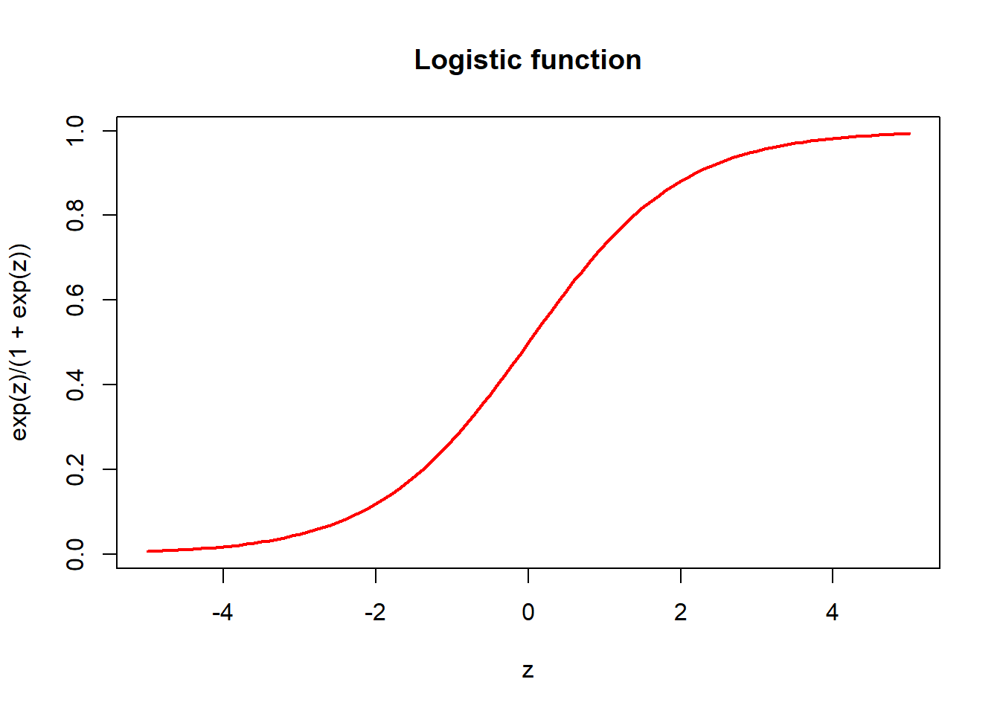

Chapter 3 Common regression models
3.1 Linear regression
3.1.1 Motivation
We have seen in the previous chapter how to compare the distribution between two groups. This gives us an understanding of the relationship between a continuous variable and a binary variable, i.e. a discrete variable with only two possible values. In order to test the association between a continuous variables we need to another approach. For example, does your ability in sprint can influence your pole vault or long jump performances? To answer this kind of question, the best approach is to use linear regression.
library(factoextra)
data(decathlon2)3.1.2 Working Example
Let’s use the simulated dataset we used in the previous chapter and add one variable VariableZ that we will build using the 2 other variables.
set.seed(352)
sample.size<-30
variableX.groupA <- rnorm(sample.size, mean = 2, sd = 1)
variableX.groupB <- rnorm(sample.size, mean = 2.4, sd = 1)
VariableX <- c(variableX.groupA, variableX.groupB)
variableY.groupA <- rgamma(sample.size, shape = 2, scale = 1)
variableY.groupB <- rgamma(sample.size, shape = 2, scale = 1.1)
VariableY <- c(variableY.groupA, variableY.groupB)
VariableZ <- runif(1, min = 0, max = 1)*VariableX +
runif(1, min = 0, max = 1)*VariableY +
rnorm(2*sample.size, mean = 0, sd = 1)
group <- rep(c('A', 'B'), each = sample.size)
dataset <- data.frame(VariableX = VariableX, VariableY = VariableY,
VariableZ = VariableZ,
group = group, stringsAsFactors = T)What is a linear regression analysis?
Let’s make a scatterplot of VariableZ and VariableY.
plot(dataset$VariableY, dataset$VariableZ)
We can clearly see that as we look at higher values of the VariableY the values of VariableZ are also increasing. Quantifying the effect of a variable \(x\) on the variation of a variable of interest \(y\) is the aim of a linear regression model. A linear regression model is written as:
\(y_i = \alpha + \beta x_i + \epsilon_i\)
where \(y\) is the variable of interest also called outcome and \(x\) is the variable we are testing for association with the outcome. \(\epsilon_i\) are called residuals and represent the part of the outcome that could not be ‘explained’ by \(x\). Each \(\epsilon_i\) are supposed independent and drawn from a normal distribution \(N(0, \sigma^2)\). The aim of a logistic regression analysis is to estimate the value of \(\alpha\), \(\beta\) and \(\sigma^2\). To do so we use the method of least square, i.e., we find the value of \(\alpha\) and \(\beta\) that minimizes the sum of squared residuals:
\(SS_{res} = \sum_{i}(y_{i} - (\alpha + \beta x_{i}))^2\)
This equation leads to exact formulas for the estimation of the parameters :
\(\hat{\beta} = \frac{\sum_{i}(x_i - \overline{x})(y_i - \overline{y})}{\sum_i (x_i - \overline{x})^2}\)
\(\hat{\alpha} = \overline{y} - \hat{\beta}\overline{x}\)
\(\sigma^{2} = \frac{SS_{res}}{n-2}\)
Let’s do a linear regression of VariableY on VariableZ by using the function lm in R:
regression <- lm(VariableZ ~ VariableY, data = dataset)
regression##
## Call:
## lm(formula = VariableZ ~ VariableY, data = dataset)
##
## Coefficients:
## (Intercept) VariableY
## 0.2723 0.6487The function lm returns 2 values, the intercept which correspond to \(\alpha\) and the \(\beta\) coefficient corresponding to the value below the VariableY. The 4beta$ coefficent can be interpreted as if my variableX increases of 1 my variableZ will increase of \(summary(regression)\)coefficients[2,4]. We can represent the results onto the scatterplot:
plot(dataset$VariableY, dataset$VariableZ, col = 'blue')
lines(dataset$VariableY,fitted(regression), col = 'red')
segments(dataset$VariableY,fitted(regression), dataset$VariableY,dataset$VariableZ)
In this plot, the blue points are the observed values, the red line is the result of the regression analysis with \(\alpha\) being the intercept of the line and \(\beta\) its slope. Finally the black vertical line represent the residuals, i.e. the variation that could not be explained by the linear regression model.
The interest of a linear regression is that we can test if the coefficient \(\beta\) is equal to 0 in order to test for association between the 2 variables. To do so in a univariate linear regression we define the statistics t as :
\(t = \frac{\beta}{se(\beta)}\)
where t (under the assumption that the outcome is normally distributed and under the null hypothesis \(H_0\) : \(\beta = 0\)) follows a Student’s t distribution with n-2 degress of freedom. With this information computing the p-value of the test is the same as for the Sutdent’s t test.
For example we can look at the association between VariableX and group using both Student’s t test and the linear regression:
#Student's t test between VariableX and group
t.test(VariableX ~ group, data = dataset)##
## Welch Two Sample t-test
##
## data: VariableX by group
## t = -2.293, df = 56.263, p-value = 0.02561
## alternative hypothesis: true difference in means between group A and group B is not equal to 0
## 95 percent confidence interval:
## -1.16872012 -0.07888065
## sample estimates:
## mean in group A mean in group B
## 1.900228 2.524028#linear regression between VariableX and group
linear.regression <- lm (VariableX ~ group, data = dataset)
summary(linear.regression)$coefficients## Estimate Std. Error t value Pr(>|t|)
## (Intercept) 1.9002279 0.1923664 9.878170 4.879130e-14
## groupB 0.6238004 0.2720472 2.292986 2.549308e-02We see that we obtain exactly the same results. As both approaches are equivalent the sample size and power computation for a linear regression model are the same than for the student’s t test.
Note that there is another possible statistical test to apply is the likelihood ratio test. This test comes from a statiscal test called goodness of fit test which allows to test for a significant improvement of the model fit. By comparing the likelihoods, i.e. the probability of observing the set of values based on the statistical model fitted, of the models fitted under the null hypothesis (in our case with only an intercept) and the alternative hypothesis (the model that we fitted). This test will be seen more in detail later in the course. Asymptotically (with the number of samples sufficiently large), both likelihood ratio test and student’s t test are equivalent.
There are four assumptions associated witha linear regression model. First, the outcome has to be a normally ditributed continuous variable. The relationship between the variable \(x\) and \(\overline{y}\) is linear. The observations have to be independent and the variance of the residuals have to be independent of X (homoscedasticity). To trust the results of the linear regression several steps have to be taken based on theses assumptions:
Checking the distribution of the outcome if the distribution is too far from a gaussian distribution it can be good to apply a transformation to the data. Such as log transformation.
Checking the distributions of the residuals as they are assumed to be normal.
In our case we simulated the outcome VariableZ as the sum of two gaussian distribution so VariableZ. Instead let’s plot the distribution of the residuals:
hist(regression$residuals, breaks = 10)
We can see clearly that the residuals distribution is really close from a normal distribution. This clearly indicates that the regression went well. Another plit is commonly used to check if a distribution is following a gaussian distribution. The Q-Q plot. This plot consist of comparing a set of values with the quantiles of a normal distribution:
qqnorm(regression$residuals, pch = 1, frame = FALSE)
qqline(regression$residuals, col = "steelblue", lwd = 2)
The closer the points are from the blue line the closer the set of values is close from a normal distribution.
Another interesting graph to plot is the scatter plot of the outcome and the residuals.
plot(regression$residuals, dataset$VariableZ)
We can clearly see a trend in the scatterplot. This trend is interesting, as it means that the residuals of the linear models are associated with the outcome Y. Meaning that the variation not explained by the linear model is not due to randomess and another linear association, independent to VariableY exists. It is easy to explain in our case as VariableZ was simulated as the weighted sum of VariableX and VariableY.
To obtain a better linear model it might of interest to use linear models with multiple variables such as:
\(z_i = \alpha + \beta_1 y_i + \beta_2 x_i + \epsilon_i\)
let’s run the model using the lm function:
multiple.regression <- lm (VariableZ ~ VariableX + VariableY, data=dataset)
multiple.regression##
## Call:
## lm(formula = VariableZ ~ VariableX + VariableY, data = dataset)
##
## Coefficients:
## (Intercept) VariableX VariableY
## -0.2473 0.2658 0.6158And we can check the significance of the \(\beta\)s obtained:
summary(multiple.regression)$coefficients## Estimate Std. Error t value Pr(>|t|)
## (Intercept) -0.2473115 0.28451895 -0.8692268 3.883686e-01
## VariableX 0.2658086 0.10814688 2.4578481 1.704112e-02
## VariableY 0.6158445 0.07401264 8.3208018 2.020188e-11We can indeed see that both coefficents are correctly identified as significant. We can also note that the coefficent of VariableY is almost not impacted by the addition of VariableX. This is due to the fact that these variables were simulated independently and their correlation should be close to 0. After, computation we obtain a correlation of 0.1804148. With a larger correlation between both variables, the impact on the coefficient obtained on the simple linear regression would have been stronger.
Strong correlation between predictors in the same models can create the so-called multi-collinearity problem that leads to a severe increase of the p.value and therefore a reduction in significance.
Note that the power and sample size computations for linear regression with multiple predictors becomes rather challenging. Searcher often use rules of thumbs. A commonly encountered rule of thumbs is at least 10-15 samples for each predictors in the model. But this is only a rule of thumbs and as we know, the required sample size is depending on the variation of the outcome of interest as well as the effect size to test.
Quick task(s):
Solve the task(s), and check your solution(s) here.
3.2 Logistic regression
3.2.1 Motivation
In some studies the response variable only has two possible values. Some examples:
individuals who have or have not cancer;
cancer patients who, after treatment, relapse or not;
from all patients receiving the same treatment, each develops resistance or not.
If analysing data with such a binary response variable, care must be taken, in particular when using regression models. Such a variable can be coded as \(\{0, 1\}\) in R, for example. However, linear regression is not going to return predicted values as only 0 or 1. In fact, nothing prevents a linear regression of returning a negative value, or a value larger than 1.
3.2.2 Link function
In order to avoid this and model the data correctly, we need to use a regression model with a link function. For a regression model with a response \(Y\) and covariates \(X_1, X_2\), this link function can be written as \(h\), as in the model:
\[ E(Y) = h^{-1}\left( \alpha + \beta_1X_1 + \beta_2X_2 \right). \]
The job of the link function is to make sure that the error is modelled correctly, and it yields predicted values in the range desired. For a binary response, the ideal link function is the logistic function. It takes any values, positive or negative, and always return a value between 0 and 1. The logistic function has can be written as:
\[ f(z) = \frac{e^z}{1+e^z}, \] for any value of \(z\). The graph of this function for values of \(z\) between -5 and 5 is:
z <- seq(from = -5, to = 5, by = 0.1)
plot(z, exp(z)/(1+exp(z)), main = "Logistic function",
type = "l", col = "red", lwd = 2)
The logistic link function relates the response \(Y\) and the linear prediction (which is the function of the covariates, \(\alpha + \beta_1 X_1 + \beta_2 X_2\)) in the following way:
\[ E(Y) = \frac{e^{\alpha + \beta_1X_1 + \beta_2X_2 }}{1+e^{\alpha + \beta_1X_1 + \beta_2X_2}}. \]
The function can be inverted to write:
\[ \log(\frac{E(Y)}{1-E(Y)}) = \alpha + \beta_1X_1 + \beta_2X_2. \]
3.2.3 The glm function
The logistic regression model is fitted by the function glm. This function works in very similar ways to lm for linear regression, such as for example using as main input a formula determining the model to be used. It also may use family and link slots to define which probability distribution is to be used for the errors (family) and which link function is to be used (link). Per family, one link function is used by default. In the case of the logistic model, it is defined family = binomial, and the default link is the logistic.
The response for the logistic model can be given in different ways. We will here use the pair (number dead, number alive) per combination of dose and sex. See the exercises for an example of a binary response.
As with a linear regression, summary and anova are used to obtain an overview of the model fit and test for effects of variables.
3.2.4 Working example
This example is adapted from an example used in Venables and Ripley (1995):
Venables, W. N. and Ripley, B. D. (1995). Modern applied statistics with S-Plus. Springer-Verlag: New York.
https://www.springer.com/gp/book/9780387954578
Collet (11=991, p. 75) reports an experiment on the toxicity of the tobacco budworm Heliothis virescens to doses of the pyrethroid trans-cypermethrin to which the moths were beginning to show resistance. It is of interest to determine which dose level to choose, so as to guarantee a specific death proportion. The response variable is thus dead or alive per moth. Being a binary variable, a logistic regression is an ideal tool to analyse the data.
Batches of 20 months of each sex were exposed for 3 days to the pyrethroid and the number in each batch which were dead (or knocked down) was recorded. The doses are used in two-fold increases, so it is natural to consider those on the log2-scale. The table of total dead moths per dose and sex is:
| sex | d=1 | d=2 | d=4 | d=8 | d=16 | d=32 |
|---|---|---|---|---|---|---|
| male | 1 | 4 | 9 | 13 | 18 | 20 |
| female | 0 | 2 | 6 | 10 | 12 | 16 |
We enter the data into R as follows: the dose is entered in its original scale, then log2-transformed. The total numbers of death moths are entered as a single vector, with all males followed by all females. So, the dose vector needs to be repeated (stacked) to produce entries corresponding to all total death count observations. Finally, we enter the sex by repeating male or female the required number of times.
dose <- c(1, 2, 4, 8, 16, 32)
ldose <- log2(dose)
numdead <- c(1, 4, 9, 13, 18, 20, 0, 2, 6, 10, 12, 16)
ldose <- rep(ldose, 2)
sex <- rep(c("male", "female"), each = length(dose))To define the response as the pair of (number dead, number alive) we do:
resp <- cbind(numdead, numalive = 20 - numdead)Now we fit the logistic model:
budworm.lg <- glm(resp ~ sex + ldose, family = binomial)
summary(budworm.lg)##
## Call:
## glm(formula = resp ~ sex + ldose, family = binomial)
##
## Deviance Residuals:
## Min 1Q Median 3Q Max
## -1.10540 -0.65343 -0.02225 0.48471 1.42944
##
## Coefficients:
## Estimate Std. Error z value Pr(>|z|)
## (Intercept) -3.4732 0.4685 -7.413 1.23e-13 ***
## sexmale 1.1007 0.3558 3.093 0.00198 **
## ldose 1.0642 0.1311 8.119 4.70e-16 ***
## ---
## Signif. codes: 0 '***' 0.001 '**' 0.01 '*' 0.05 '.' 0.1 ' ' 1
##
## (Dispersion parameter for binomial family taken to be 1)
##
## Null deviance: 124.8756 on 11 degrees of freedom
## Residual deviance: 6.7571 on 9 degrees of freedom
## AIC: 42.867
##
## Number of Fisher Scoring iterations: 4There may also be an interaction effect between sex and ldose, meaning that the ldose effect may change depending on the sex. To check this, we add the interaction term:
budworm.lg.i <- update(budworm.lg, . ~ sex:ldose)
summary(budworm.lg.i)##
## Call:
## glm(formula = resp ~ sex:ldose, family = binomial)
##
## Deviance Residuals:
## Min 1Q Median 3Q Max
## -1.45854 -0.29503 -0.05339 0.44888 1.06990
##
## Coefficients:
## Estimate Std. Error z value Pr(>|z|)
## (Intercept) -2.9073 0.3893 -7.468 8.12e-14 ***
## sexfemale:ldose 0.8823 0.1275 6.920 4.52e-12 ***
## sexmale:ldose 1.2893 0.1669 7.723 1.13e-14 ***
## ---
## Signif. codes: 0 '***' 0.001 '**' 0.01 '*' 0.05 '.' 0.1 ' ' 1
##
## (Dispersion parameter for binomial family taken to be 1)
##
## Null deviance: 124.8756 on 11 degrees of freedom
## Residual deviance: 5.0443 on 9 degrees of freedom
## AIC: 41.155
##
## Number of Fisher Scoring iterations: 4Here we fitted a new model by using the function update, which added the interaction effect sex:dose to the linear predictor already in budworm.lg. Note that this is the same as fitting the model by calling glm again with the interaction term added.
We can use anova to summarize results for a model, as before. Here we will test for the effect of variables in the model fit budworm.lg. The function anova will perform testing as if variables were added sequentially, one by one. In this case, the effect of sex is tested, subsequently the effect of ldose given that the sex effect is corrected for. Let us try this out:
anova(budworm.lg)## Analysis of Deviance Table
##
## Model: binomial, link: logit
##
## Response: resp
##
## Terms added sequentially (first to last)
##
##
## Df Deviance Resid. Df Resid. Dev
## NULL 11 124.876
## sex 1 6.077 10 118.799
## ldose 1 112.042 9 6.757Note that the anova function now did not return a p-value for the covariate effects. When applied with generalized linear model fits, this is the default. This forces the user to choose the appropriate test to run (see help(anova.glm) for details). The suitable test in this case is the chi-square, so we rerun it using:
anova(budworm.lg, test = "Chisq")## Analysis of Deviance Table
##
## Model: binomial, link: logit
##
## Response: resp
##
## Terms added sequentially (first to last)
##
##
## Df Deviance Resid. Df Resid. Dev Pr(>Chi)
## NULL 11 124.876
## sex 1 6.077 10 118.799 0.0137 *
## ldose 1 112.042 9 6.757 <2e-16 ***
## ---
## Signif. codes: 0 '***' 0.001 '**' 0.01 '*' 0.05 '.' 0.1 ' ' 1In order to test for the main effects, followed by the interaction, use the entire model fit in one glm call:
anova(glm(resp ~ sex + ldose + sex:ldose, family = binomial), test = "Chisq")## Analysis of Deviance Table
##
## Model: binomial, link: logit
##
## Response: resp
##
## Terms added sequentially (first to last)
##
##
## Df Deviance Resid. Df Resid. Dev Pr(>Chi)
## NULL 11 124.876
## sex 1 6.077 10 118.799 0.0137 *
## ldose 1 112.042 9 6.757 <2e-16 ***
## sex:ldose 1 1.763 8 4.994 0.1842
## ---
## Signif. codes: 0 '***' 0.001 '**' 0.01 '*' 0.05 '.' 0.1 ' ' 1We conclude that both sex and ldose have statistically significant effects, but that the interaction does not.
Quick task(s):
Solve the task(s), and check your solution(s) here.
3.2.5 Fitted values
It is useful to make a graph of the predicted values. For this, we use the function predict. It needs as input the fitted model, in this case budworm.lg, as well as the data for which you want to make predictions. If no data is given, the fitted values corresponding to the observed data are used. If data is provided, it needs to be given as a data.frame object, containing variables with the same variable names as in the original data.
Let us first extract the fitted values:
myfitted <- predict(budworm.lg)
myfitted## 1 2 3 4 5 6 7
## -2.3724119 -1.3081980 -0.2439840 0.8202300 1.8844439 2.9486579 -3.4731553
## 8 9 10 11 12
## -2.4089413 -1.3447274 -0.2805134 0.7837006 1.8479145By default, predict returns values on the scale of the linear predictor, i.e. it returns
\[
\hat\alpha + \hat\beta_1 X_1 + \hat\beta_2 X_2,
\]
where \(\hat\alpha, \hat\beta_1, \hat\beta_2\) are the parameter estimates from the model fit, as given in the column Estimate of the model fit summary:
summary(budworm.lg)$coef## Estimate Std. Error z value Pr(>|z|)
## (Intercept) -3.473155 0.4685202 -7.413032 1.234445e-13
## sexmale 1.100743 0.3558271 3.093478 1.978249e-03
## ldose 1.064214 0.1310775 8.118971 4.701542e-16While this is useful, it is easier to examine the model fit by comparing the fitted values on the scale of the response. For this, we use
myfitted <- predict(budworm.lg, type = "response")
myfitted## 1 2 3 4 5 6 7
## 0.08530076 0.21278854 0.43930479 0.69428515 0.86812073 0.95020002 0.03008577
## 8 9 10 11 12
## 0.08249341 0.20673372 0.43032791 0.68647712 0.86388206These are fitted probabilities of dead moths for each combination of ldose and sex.
Quick task(s):
Solve the task(s), and check your solution(s) here.